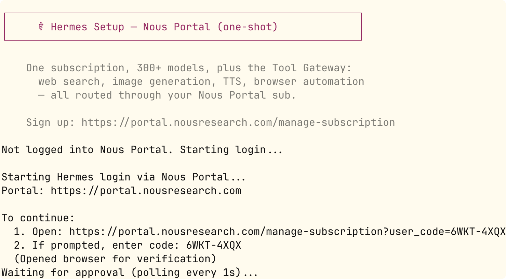
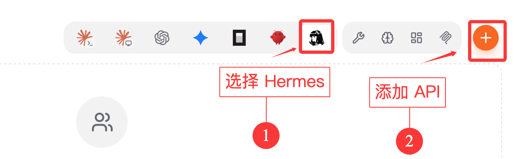
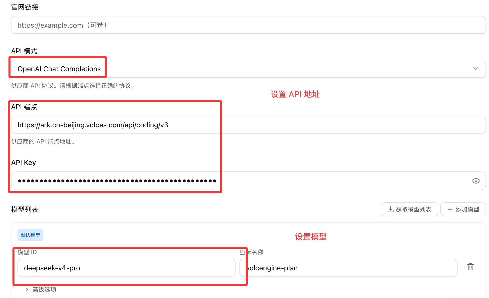

Hermes Agent Configuration
Learn how to configure Hermes Agent, including configuration files, LLM provider settings, tool configuration, and all available configuration options.
Select model provider
Hermes supports 300+ models and more than a dozen providers.
Nous Portal is Nous Research's own subscription gateway. One OAuth login covers model invocation + tool gateway (web search, image generation, TTS, browser automation):
hermes setup --portal

The above command will open the browser to complete OAuth authorization, set Nous as the inference provider, and enable all tool gateways at the same time.

Full setup wizard (with built-in API Key):
hermes setup
The wizard provides three modes:
| Mode | Description | Who It's For |
|---|---|---|
| Quick Setup (Nous Portal) | One-click OAuth login, no API Key required | New users who want to get up and running as quickly as possible |
| Full Setup | Step-by-step configuration of each provider and tool | Users who want to customize everything |
| Blank Slate | Enable only the minimal core (file operations + terminal), turn off everything else | Advanced users who need precise control |
Manually select provider
Use the following command to view the available providers:
hermes model
Use up/down arrow keys to select, Enter to confirm the configuration:

Common provider configuration methods:
| provider | Configuration Method |
|---|---|
| Nous Portal | hermes setup --portal（OAuth） |
| Anthropic（Claude） | OAuth login (requires Max plan + additional usage quota), or set upANTHROPIC_API_KEY |
| OpenRouter | SettingsOPENROUTER_API_KEY |
| OpenAI | SettingsOPENAI_API_KEY |
| Google AI Studio | SettingsGOOGLE_API_KEY |
| xAI（Grok OAuth） | hermes model → xAI Grok OAuth |
| Local model (LM Studio) | SettingsLM_API_KEYandLM_BASE_URL |
Principle: First get the basic conversation working, then gradually enable advanced features such as gateways, scheduled tasks, and voice.
Use CC Switch for one-click configuration
Next, we use CC Switch to let Hermes use large models such as Qwen, GLM, Kimi, DeepSeek. CC Switch is an open-source cross-platform desktop tool that centrally manages AI coding assistants like Claude Code, Codex, and Gemini CLI, supporting one-click switching of API providers, models, and configurations.
You can download it from the official website:https://ccswitch.io/zh/。
You can also go to GitHub Releases: https://github.com/farion1231/cc-switch/releases/latestDownload the installer package for your platform.
Scroll to the very bottom of the webpage, in the resource pack section, download the installer package for your platform:

After downloading and installing CC Switch, we select Hermes, then click the "Create" button in the upper right corner.

Select Custom in the configuration:

We can use the Coding Plan, which is still the most cost-effective, after all it's a monthly subscription:
Here we selected ByteDance's Ark, entered the API Key and request address, OpenAI-compatible request address:https://ark.cn-beijing.volces.com/api/coding/v3, set your API key, and set the desired model. What's selected here isdeepseek-v4-pro：

After configuration, click the save button in the lower right corner. Returning to the main interface, we can see the configured information. You can test whether the setup is successful, then enable it:

After enabling it, we go to the command-line interface to use it.hermesCommand to launch Hermes:
hermes
As you can see, the model has been set up successfully and is ready to use.
For more details on CC Switch, refer to:https://www.runoob.com/ai-agent/cc-switch.html
Configuration file location
Hermes Agent uses the following configuration files:
| File | Description |
|---|---|
~/.hermes/config.yaml |
Main configuration file |
~/.hermes/.env |
Environment variables (API keys, etc.) |
~/.hermes/state.db |
SQLite session database |
~/.hermes/skills/ |
Installed skills directory |
~/.hermes/sessions/ |
Session storage directory |
~/.hermes/memories/ |
Persistent memory storage |